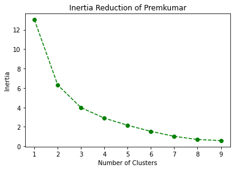
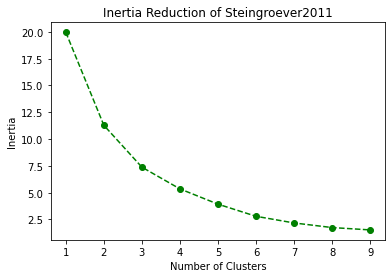
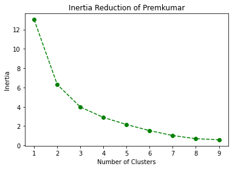
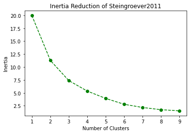
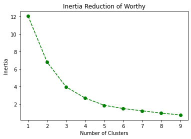
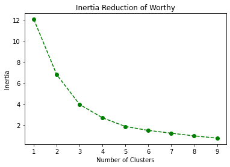

CA4015 Clustering Assignment Introduction¶
Introduction to the Iowa Gambling Task¶
This Jupyter Book will hold an analysis of data from 617 Healthy Participants Performing the Iowa Gambling Task (IGT). The data, which originates from 10 individual studies, is pooled together by [Steingroever et al., 2015]. All participants are healthy (have no known neurological impairments). Participants were assessed on a computerised version of the IGT. The playing conditions vary between each study, with participant’s attempts ranging between 95 - 150 tries. The payoff scheme varies also, with some servers hosting harsher penalties and more lucrative rewards.
Introduction to K-Means Clustering Algorithm¶
K-Means Clustering is a classical machine learning algorithm developed well over 50 years ago. K-Means is an unsupervised machine learning technique meaning, unlike classification it does not need to be trained on annotated training data. Although K-Means is a rhobust algorithm, it does suffer from the ‘curse of dimensionality’. This means that techniques such as Principal Component Analysis are commonly used in conjunction with K-Means to perform dimensionality reduction.
Introduction to Federated Learning¶
Federated Learning (FL) is a deep learning approach which involves training a model over disconnected or siloed data centres such as mobile phones. Rather than both the data and model being centralised on one system, data is preserved in its local environment. A machine learning model is sent to the system hosting the data, rather than the reverse. This approach makes a step forward in protecting the privacy of user-generated data. In FL, the user data is not transmitted across a network. However, there are challenges associated with FL, including: the expensive nature, system heterogeneity, statistical heterogeneity, and privacy [Li et al., 2020].
Dataset Description¶
As stated previously, the data originates from 10 individual studies. These studies can be found listed below:
Study |
Amount of Participants |
Number of Trials |
|---|---|---|
15 |
95 |
|
162 |
100 |
|
19 |
100 |
|
40 |
100 |
|
25 |
100 |
|
70 |
100 |
|
57 |
150 |
|
41 |
150 |
|
153 |
100 |
|
35 |
100 |
Quality Control¶
All studies were administered through a computerized version of the IGT to ensure quality [Steingroever et al., 2015].
Data Cleaning¶
In the following Notebook, we will verify the integrity of our data. The data provided by 10 individual studies and centralised by [Steingroever et al., 2015], is inherently clean and ready for use. To ensure this, we will perform the following verification steps:
Test all datasets for any missing values.
Verify that deck choice datasets do not host cells exceding a maximum value of 4 and a minimum value of 1.
#importing packages
import pandas as pd
import numpy as np
#Reading in the data
sets = []
#choices
choice_95=pd.read_csv("../data/choice_95.csv")
sets.append(choice_95)
choice_100=pd.read_csv("../data/choice_100.csv")
sets.append(choice_100)
choice_150=pd.read_csv("../data/choice_150.csv")
sets.append(choice_150)
#Losses
loss_95=pd.read_csv("../data/lo_95.csv")
sets.append(loss_95)
loss_100=pd.read_csv("../data/lo_100.csv")
sets.append(loss_100)
loss_150=pd.read_csv("../data/lo_150.csv")
sets.append(loss_150)
#Wins
win_95=pd.read_csv("../data/wi_95.csv")
sets.append(win_95)
win_100=pd.read_csv("../data/wi_100.csv")
sets.append(win_100)
win_150=pd.read_csv("../data/wi_150.csv")
sets.append(win_150)
#Index
index_95=pd.read_csv("../data/index_95.csv")
sets.append(index_95)
index_100=pd.read_csv("../data/index_100.csv")
sets.append(index_100)
index_150=pd.read_csv("../data/index_150.csv")
sets.append(index_150)
for set in sets:
print("NaN value detected: {}".format(set.isnull().values.any()))
NaN value detected: False
NaN value detected: False
NaN value detected: False
NaN value detected: False
NaN value detected: False
NaN value detected: False
NaN value detected: False
NaN value detected: False
NaN value detected: False
NaN value detected: False
NaN value detected: False
NaN value detected: False
#Let's view the statitics for our choice datasets to verify min & max values
(choice_100.T.describe()).iloc[[3,-1]].mean(axis=1)
min 1.0
max 4.0
dtype: float64
Note: This part of data exploration is simple by nature, but generates a large output. For simplicity, I have only included the verification of the small choice_100 dataset.
Data Preperation¶
In section 4 of this book, we will be performing K-Means clustering based on a participant’s cumulative win and loss over the course of the game with results measured in 10% intervals of completion. That is to say, we measure a participants net score every 10 turns in the case of a participant with 100 total turns.
In the case of participants with 150 attempts, every 15 consecutive attempts will be condensed into a singular value.
In the case of participants with 95 attempts, some calculation will be required to aggregate data points together and obtain a mean value. This is required as 10% of 95 is 9.5. Clearly we cannot measure the 9.5th turn. This means we will measure the mean of the 9th and 10th turn.
To do this, our data requires some Feature Engineering. We require a new dataset consisting of the scores described above per participant. Also, in Section 5, we will be performing the same analysis, but with a Federated Learning approach. This means that one large dataset will not suffice. For each of the original datasets provided we must:
Create and fill our rolling score datasets
Divide the data out into their individual surveys
Creating Rolling Dataframes¶
The creation of Dataframes to hold rolling cumulative sumations of values across periods of 10 & 15 attempts for the surveys allowing 100 & 150 attempts respectfully is a painless process.
However, this is not the case with the survey offering 95 attempts as 95 is an uneven number meaning it does not divide easily into equally sized portions. As a consequence of this, the processing steps for the 95 dataset are much more complex.
#We will use pandas.DataFrame.cumsum() to calculate our cumulative sum
rolling_win_100=(win_100.cumsum(axis=1)).iloc[:, range(9,100,10)]
rolling_loss_100=(loss_100.cumsum(axis=1)).iloc[:, range(9,100,10)]
rolling_win_150=(win_150.cumsum(axis=1)).iloc[:, range(14,150,15)]
rolling_loss_150=(loss_150.cumsum(axis=1)).iloc[:, range(14,150,15)]
#The rolling values for the 95 sets are more difficult as 95 is not divisible by 10
inter_95=(win_95.cumsum(axis=1)).iloc[:,[9,18,27,28,37,46,47,56,65,66,75,84,85, 94]]
#Finding the rolling sum for 9th column
wins_95_col8=(win_95.cumsum(axis=1)).iloc[:,8]
#Calculating the average of intermediate columns as new column
Wins_9_5=(wins_95_col8+inter_95.iloc[:,0])/2
Wins_28_5=(inter_95.iloc[:,2]+inter_95.iloc[:,3])/2
Wins_47_5=(inter_95.iloc[:,5]+inter_95.iloc[:,6])/2
Wins_66_5=(inter_95.iloc[:,8]+inter_95.iloc[:,9])/2
Wins_85_5=(inter_95.iloc[:,11]+inter_95.iloc[:,12])/2
#Add everything together
inter_win_95=pd.concat([inter_95, Wins_9_5.rename("Wins_9_5"), Wins_28_5.rename("Wins_28_5"),
Wins_47_5.rename("Wins_47_5"),Wins_66_5.rename("Wins_66_5"),
Wins_85_5.rename("Wins_85_5")], axis=1)
#Reorganise columns
cols = inter_win_95.columns.tolist()
rolling_win_95 = inter_win_95[[cols[-5], cols[1], cols[-4], cols[4], cols[-3], cols[7], cols[-2], cols[10], cols[-1], cols[13]]]
#Now we must do the same for the Losses
#The rolling values for the 95 sets are more difficult as 95 is not divisible by 10
inter_loss_95=(loss_95.cumsum(axis=1)).iloc[:,[9,18,27,28,37,46,47,56,65,66,75,84,85, 94]]
#Finding the rolling sum for 9th column
losses_95_col8=(loss_95.cumsum(axis=1)).iloc[:,8]
#Calculating the average of intermediate columns as new column
Losses_9_5=(losses_95_col8+inter_loss_95.iloc[:,0])/2
Losses28_5=(inter_loss_95.iloc[:,2]+inter_loss_95.iloc[:,3])/2
Losses47_5=(inter_loss_95.iloc[:,5]+inter_loss_95.iloc[:,6])/2
Losses66_5=(inter_loss_95.iloc[:,8]+inter_loss_95.iloc[:,9])/2
Losses85_5=(inter_loss_95.iloc[:,11]+inter_loss_95.iloc[:,12])/2
#Add everything together
inter_loss_95=pd.concat([inter_loss_95, Losses_9_5.rename("Losses_9_5"), Losses28_5.rename("Losses28_5"),
Losses47_5.rename("Losses47_5"),Losses66_5.rename("Losses66_5"),
Losses85_5.rename("Losses85_5")], axis=1)
#Reorganise columns
cols = inter_loss_95.columns.tolist()
rolling_loss_95 = inter_loss_95[[cols[-5], cols[1], cols[-4], cols[4], cols[-3], cols[7], cols[-2], cols[10], cols[-1], cols[13]]]
Seperate Data by Study¶
We will now seperate our data by study. We can achieve this by using our index files which allows us to seperate our subjects row-wise. We will do the following:
Append our index value as a new column
Group our data by this new column
Select each study as a subset and create a new DataFrame
#List for sub sets
finished_sets = []
#List for full sets
full_sets = []
Larger Rolling Datasets¶
While the seperated studies will be beneficial for the federated learning approach, it is important to keep the aggregated datasets also.
#Wins
full_rolling_wins_95 =rolling_win_95.reset_index(drop=True).join(index_95)
full_rolling_wins_100 =rolling_win_100.reset_index(drop=True).join(index_100)
full_rolling_wins_150 =rolling_win_150.reset_index(drop=True).join(index_150)
full_sets.append(full_rolling_wins_95)
full_sets.append(full_rolling_wins_100)
full_sets.append(full_rolling_wins_150)
#losses
full_rolling_losses_95=rolling_loss_95.reset_index(drop=True).join(index_95)
full_rolling_losses_100=rolling_loss_100.reset_index(drop=True).join(index_100)
full_rolling_losses_150=rolling_loss_150.reset_index(drop=True).join(index_150)
full_sets.append(full_rolling_losses_95)
full_sets.append(full_rolling_losses_100)
full_sets.append(full_rolling_losses_150)
#Choices
full_rolling_choices_95=choice_95.reset_index(drop=True).join(index_95)
full_rolling_choices_100=choice_100.reset_index(drop=True).join(index_100)
full_rolling_choices_150=choice_150.reset_index(drop=True).join(index_150)
full_sets.append(full_rolling_choices_95)
full_sets.append(full_rolling_choices_100)
full_sets.append(full_rolling_choices_150)
The 95 Dataset:¶
#Wins
Fridberg_rolling_wins_95=rolling_win_95.reset_index(drop=True).join(index_95)
finished_sets.append(Fridberg_rolling_wins_95)
#Losses
Fridberg_rolling_losses_95=rolling_loss_95.reset_index(drop=True).join(index_95)
finished_sets.append(Fridberg_rolling_losses_95)
#Choices
Fridberg_choices_95=choice_95.reset_index(drop=True).join(index_95)
finished_sets.append(Fridberg_choices_95)
The 100 dataset:¶
#Wins
grouped_wins_100 = rolling_win_100.reset_index(drop=True).join(index_100).groupby("Study")
Horstmann_rolling_wins_100=grouped_wins_100.get_group("Horstmann")
finished_sets.append(Horstmann_rolling_wins_100)
Kjome_rolling_wins_100=grouped_wins_100.get_group("Kjome")
finished_sets.append(Kjome_rolling_wins_100)
Maia_rolling_wins_100=grouped_wins_100.get_group("Maia")
finished_sets.append(Maia_rolling_wins_100)
SteingroverInPrep_rolling_wins_100=grouped_wins_100.get_group("SteingroverInPrep")
finished_sets.append(SteingroverInPrep_rolling_wins_100)
Premkumar_rolling_wins_100=grouped_wins_100.get_group("Premkumar")
finished_sets.append(Premkumar_rolling_wins_100)
Wood_rolling_wins_100=grouped_wins_100.get_group("Wood")
finished_sets.append(Wood_rolling_wins_100)
Worthy_rolling_wins_100=grouped_wins_100.get_group("Worthy")
finished_sets.append(Worthy_rolling_wins_100)
#Losses
grouped_losses_100 = rolling_loss_100.reset_index(drop=True).join(index_100).groupby("Study")
Horstmann_rolling_losses_100=grouped_losses_100.get_group("Horstmann")
finished_sets.append(Horstmann_rolling_losses_100)
Kjome_rolling_losses_100=grouped_losses_100.get_group("Kjome")
finished_sets.append(Kjome_rolling_losses_100)
Maia_rolling_losses_100=grouped_losses_100.get_group("Maia")
finished_sets.append(Maia_rolling_losses_100)
SteingroverInPrep_rolling_losses_100=grouped_losses_100.get_group("SteingroverInPrep")
finished_sets.append(SteingroverInPrep_rolling_losses_100)
Premkumar_rolling_losses_100=grouped_losses_100.get_group("Premkumar")
finished_sets.append(Premkumar_rolling_losses_100)
Wood_rolling_losses_100=grouped_losses_100.get_group("Wood")
finished_sets.append(Wood_rolling_losses_100)
Worthy_rolling_losses_100=grouped_losses_100.get_group("Worthy")
finished_sets.append(Worthy_rolling_losses_100)
#Choices
grouped_choices_100 = choice_100.reset_index(drop=True).join(index_100).groupby("Study")
Horstmann_choices_100=grouped_choices_100.get_group("Horstmann")
finished_sets.append(Horstmann_choices_100)
Kjome_choices_100=grouped_choices_100.get_group("Kjome")
finished_sets.append(Kjome_choices_100)
Maia_choices_100=grouped_choices_100.get_group("Maia")
finished_sets.append(Maia_choices_100)
SteingroverInPrep_choices_100=grouped_choices_100.get_group("SteingroverInPrep")
finished_sets.append(SteingroverInPrep_choices_100)
Premkuma_choices_100=grouped_choices_100.get_group("Premkumar")
finished_sets.append(Premkuma_choices_100)
Wood_choices_100=grouped_choices_100.get_group("Wood")
finished_sets.append(Wood_choices_100)
Worthy_choices_100=grouped_choices_100.get_group("Worthy")
finished_sets.append(Worthy_choices_100)
The 150 Dataset:¶
#Wins
grouped_wins_150 = rolling_win_150.reset_index(drop=True).join(index_150).groupby("Study")
Steingroever2011_rolling_wins_150=grouped_wins_150.get_group("Steingroever2011")
finished_sets.append(Steingroever2011_rolling_wins_150)
Wetzels_rolling_wins_150=grouped_wins_150.get_group("Wetzels")
finished_sets.append(Wetzels_rolling_wins_150)
#Losses
grouped_losses_150 = rolling_loss_150.reset_index(drop=True).join(index_150).groupby("Study")
Steingroever2011_rolling_losses_150=grouped_losses_150.get_group("Steingroever2011")
finished_sets.append(Steingroever2011_rolling_losses_150)
Wetzels_rolling_losses_150=grouped_losses_150.get_group("Wetzels")
finished_sets.append(Wetzels_rolling_losses_150)
#Choices
grouped_choices_150 = choice_150.reset_index(drop=True).join(index_150).groupby("Study")
Steingroever2011_choices_150=grouped_choices_150.get_group("Steingroever2011")
finished_sets.append(Steingroever2011_choices_150)
Wetzels_choices_150=grouped_choices_150.get_group("Wetzels")
finished_sets.append(Wetzels_choices_150)
Writing Out Data:¶
#Writing out full datasets
for s in full_sets:
s.to_csv(f'../data/cleaned/full_{s.columns[0].split("_")[0]}_{s.columns[-3].split("_")[-1]}.csv', index=False)
#Writing out study datasets
for s in finished_sets:
s.to_csv(f'../data/cleaned/{s.Study.unique()[0]}_rolling_{s.columns[0].split("_")[0]}_{s.columns[-3].split("_")[-1]}.csv', index=False)
Conclusion¶
We have now created a total of 39 datasets which are stored in a folder called cleaned. These sets consist of 9 full sets describing the amounts participants made and lost over 10% intervals. The other 30 sets are subsets of the larger 9 sets seperated by study.
We will use the larger sets in Section 4 of this book for K-Means Clustering and analysis. The subsets will then be used in Section 5 as part of a Federated Learning approach.
Clustering of Total Dataset (Net Win by Net Loss)¶
In the follownig Jupyter Notebook, we will be clustering and performing some analysis on the total dataset of 617 healthy participants performing the Iowa Gambling Task (IGT). The clustering algorithm we will be using is the K-Means Algorithm. In the following analysis, we will not be taking varying testing conditions between studies (such as Reward Scheme and number of attempts) into consideration. We will be analysing users based on their Net Win \(\times\) Net Loss.
We will perform the following tasks in this Notebook:
Analysis Setup
Understand Data Distribution
Histogram
QQPlot
Clustering
Finding the Elbow Point (Inertia Reduction)
K-Means Clustering
Comparison Between Contrasting Clusters
Time-Series Analysis
Comparison of All Clusters
Boxplot
Initial Setup¶
Importing Packages¶
import pandas as pd
import numpy as np
from sklearn.cluster import KMeans
import matplotlib.pyplot as plt
from scipy.stats import pearsonr
from statsmodels.graphics.gofplots import qqplot
from matplotlib import pyplot
---------------------------------------------------------------------------
ModuleNotFoundError Traceback (most recent call last)
~\AppData\Local\Temp/ipykernel_18200/935022693.py in <module>
4 import matplotlib.pyplot as plt
5 from scipy.stats import pearsonr
----> 6 from statsmodels.graphics.gofplots import qqplot
7 from matplotlib import pyplot
ModuleNotFoundError: No module named 'statsmodels'
Importing Data¶
#Importing challenge involving 95 attempts
index_95 = pd.read_csv("../data/index_95.csv")
choice_95 = pd.read_csv("../data/choice_95.csv")
win_95 = pd.read_csv("../data/wi_95.csv")
loss_95 = pd.read_csv("../data/lo_95.csv")
#Importing challenge involving 100 attempts
index_100 = pd.read_csv("../data/index_100.csv")
choice_100 = pd.read_csv("../data/choice_100.csv")
win_100 = pd.read_csv("../data/wi_100.csv")
loss_100 = pd.read_csv("../data/lo_100.csv")
#Importing challenge involving 150 attempts
index_150 = pd.read_csv("../data/index_150.csv")
choice_150 = pd.read_csv("../data/choice_150.csv")
win_150 = pd.read_csv("../data/wi_150.csv")
loss_150= pd.read_csv("../data/lo_150.csv")
Merging Data¶
We will firstly merge all of our data together into large csv files representing the index, choice, win, and loss. For now we will ignore the different payoff schemes introduced for different studies.
As the index for the csv’s will no longer be unique, we will ignore it using ignore_index=True. This will also result in some NaN values but they will not affect our results at this point.
full_index = pd.concat([index_95, index_100, index_150], ignore_index=True)
full_choice = pd.concat([choice_95, choice_100, choice_150], ignore_index=True)
full_win = pd.concat([win_95, win_100, win_150], ignore_index=True)
full_loss = pd.concat([loss_95, loss_100, loss_150], ignore_index=True)
KMeans Clustering of Net Win & Net Loss¶
The first thing we will do is cluster by Net Win \(\times\) Net Loss for each participant.
Let’s create a new DF with two columns, net_win & net_loss with each row representing a participant. We need:
Array representing net win / loss for each participant
Suitable dataframe
#Creating our arrays
net_win = np.array(full_win.sum(axis=1))
net_loss = np.array(full_loss.sum(axis=1))
#Creating and displaying our dataframe
net_df = pd.DataFrame(index=full_win.index, columns=["Winnings", "Losses", "Final"],
data={"Winnings":net_win, "Losses":net_loss, "Final":net_win+net_loss})
net_df.head()
| Winnings | Losses | Final | |
|---|---|---|---|
| 0 | 5800.0 | -4650.0 | 1150.0 |
| 1 | 7250.0 | -7925.0 | -675.0 |
| 2 | 7100.0 | -7850.0 | -750.0 |
| 3 | 7000.0 | -7525.0 | -525.0 |
| 4 | 6450.0 | -6350.0 | 100.0 |
So now that we have a suitable dataframe consisting of winnnings and losses per participant, it’s time to do some analysis before we begin clustering.
Let’s visualize the data straight away to help us better understand the distribution of our data
Note that we invert the Y axis in the below plot.
#Plotting points
plt.scatter(net_df["Winnings"], net_df["Losses"])
#Inverting y-axis
plt.gca().invert_yaxis()
#Axes labels
plt.xlabel('Earnings')
plt.ylabel('Losses')
#Plot Title
plt.title("Net Earnings by Net Loss per Participant")
#Inserting Pearson Correlation
corr, _=pearsonr(net_df["Winnings"], net_df["Losses"])
corr = "PearsonR: " + str((float("{0:.2f}".format(corr))))
plt.text(5500, -18000, corr, color='red')
plt.show()

Linear Relationship¶
From this graph we can see a strong negative (Y is inverted) linear relationship indicating that the more “money” a participant earned in the challenge, the more they lost in general.
This relationship is confirmed with the inclusion of Pearson Correlation Coefficient.
Let’s create a histogram representing the total earnings (Net Win + Net Loss).
#Let's see the range of earnings in our data:
print("Minimum: {} Maximum: {}".format(
net_df["Final"].describe()["min"], net_df["Final"].describe()["max"]))
Minimum: -4250.0 Maximum: 3750.0
#The histogram of the data
n, bins, patches = plt.hist(net_df["Final"], 20, facecolor='g')
plt.xlabel('Earnings')
plt.ylabel('Number of Participants')
plt.title('Histogram of Earnings')
plt.grid(True)
plt.show()

#Let's learn more about the distribution using a QQPlot
qqplot(net_df["Final"], line='s')
pyplot.show()

Interpretation of Histogram and QQPlot¶
The histogram with a total of 20 bins shows us that the distribution of the data somewhat resembles a normal distribution. This is to be expected when working with human-generated data.
However, it is clear that there is data at the two extremeties of the bell curve indicating groups of outliers. These outliers are also clearly represented in the QQplot which has tails straying from the centre line.
These groups of outliers are representative of participants which had total earnings considerably higher or lower than the average. Later on, we will create a boxplot representative of participant’s choices with respect to their clusters where we will further discuss the existence of outliers.
Clustering¶
Visually, it is unclear how many clusters will be most suitable for this graph. We will create a lineplot representative of the total inertia for each varying quantity of clusters. From this plot, we can interprete the elbow point of the line which indicates a suitable number of clusters. Any amount of clusters after this point results in a negligible reduction of inertia and is therefore unnecessary.
This graph will allow us to visualise the decrease in inertia between cluster quantities. We can then decide by eye which amount is most suitable. This method is called finding the elbow-point of a line curve.
#Let X equal our points
X = net_df[["Winnings", "Losses"]]
#List of inertias
inertias = []
#Finding and appending Inertia to list
for i in range(3, 30):
kmeans = KMeans(n_clusters=i).fit(X)
inertias.append(kmeans.inertia_)
#Create Inertia Line Plot
plt.plot(range(3,30), inertias, "go--")
plt.title('Inertia Reduction')
plt.xlabel('Number of Clusters')
plt.ylabel('Inertia')
plt.show()

Interpreting the Inertia Graph¶
We can see that the rate of change (or the slope) decreases drastically for more than 10 clusters. Therefore, we can assume that 10 clusters is a suitable number for this particular graph.
Let’s now continue the process by employing the KMeans algorithm with a cluster allowance of 10. We will then calculate the label associated with each data point. This will allow us to seperate the data points on our graph by colour depending on the cluster they belong to. We will also find the centroids of each cluster and plot them with a + symbol.
Cluster Graph¶
#Let X equal our points
X = net_df[["Winnings", "Losses"]]
#Perform kmeans and fit X
kmeans = KMeans(n_clusters=10).fit(X)
#Calculating Labels
label = kmeans.labels_
#Calculating Centroids
centroids = kmeans.cluster_centers_
plt.figure(figsize=(7,7))
#filter rows of original data by label
filtered_label0, filtered_label1, filtered_label2 = net_df[label == 0], net_df[label == 1], net_df[label == 2]
filtered_label3, filtered_label4, filtered_label5 = net_df[label == 3], net_df[label == 4], net_df[label == 5]
filtered_label6, filtered_label7, filtered_label8, filtered_label9 = net_df[label == 6], net_df[label == 7], net_df[label == 8], net_df[label == 9]
filtered_labels = [filtered_label0,filtered_label1,filtered_label2,filtered_label3,filtered_label4,filtered_label5
,filtered_label6,filtered_label7,filtered_label8,filtered_label9]
colors=["blue", "red", "green", "purple", "orange", "yellow", "aqua", "darkblue", "brown", "pink"]
#Inverting y-axis
plt.gca().invert_yaxis()
#plotting the clusters
for i in range(0, len(filtered_labels)):
plt.scatter(filtered_labels[i]["Winnings"], filtered_labels[i]["Losses"], color=colors[i])
#Plotting the centroids
plt.scatter(centroids[:,0], centroids[:,1], marker='+', color="black")
#Calculating & placing inertia
inertia= "Inertia: " + str(float("{0:.2f}".format(kmeans.inertia_)))
#Placing Text
plt.text(5800, -18000, inertia, verticalalignment='top')
#Axes labels
plt.xlabel('Earnings')
plt.ylabel('Losses')
#Plot Title
plt.title("Net Earnings by Net Loss per Participant")
#Saving image for reference
plt.savefig("all_clusters")
plt.show()
Cluster Graph Analysis¶
In the above graph it is clear that the data does not all come from the same distribution. There are two very apparent lines.
We can easily imagine that the more dense line on the left is likely a combination of data points from studies allowing participants a total of 95 & 100 tries. The less dense line further right in the diagram being made up of the remaining participants allowed a total of 150 tries. This would make sense as more tries would allow users to generally receive more rewards and penalties causing their datapoint to be further to the top right.
As stated previously, the studies employed various payoff schemes. This means that harsher penalties and more lucrative rewards were available in some studies but not in others. This has an effect on the total amount of profit or loss a participant can make during the game.
We can see that the clusters do a reasonably good job dividing the data. However, some clusters seem less reasonable, particularly the yellow, blue, and red clusters.
Comparison Between Opposite Groups¶
From the above diagram I am interested in viewing the difference between the choices made by users in the purple cluster (bottom-left) versus users in the dark blue cluster (top-right). We have already segmented our dataset using the filtered_label3 & filtered_label7 sets above. We can filter our full_choice dataset in a similar fashion.
For simplicity, we will choose 6 participants out of the 57 in the purple group for analysis. We will choose 3 users with the highest profit and 3 users with the lowest profit.
Clustering participants based on the decks they chose from is a difficult task. Instead, a time-series chart may reveal trends in the data more easily. A time-series chart will reveal to us the decision making process of users. We expect to see choices steadily lean towards the more favourable decks of C and D in situations where the participant performed well.
As we are viewing the polar extremes of the data, we should expect to see contrasting strategies employed by subjects.
Note: Re-running the cluster algorithm above will cause the clusters to change colour and no longer be associated with the same labels
Pre-Processing¶
#Filter out top and bottom 3 results
purples = pd.concat([filtered_label3.sort_values("Final").iloc[:3], filtered_label3.sort_values("Final").iloc[-3:]])
#Here we see the table of top 3 and bottom 3 earners.
purples
| Winnings | Losses | Final | |
|---|---|---|---|
| 176 | 5950.0 | -5500.0 | 450.0 |
| 116 | 5750.0 | -5200.0 | 550.0 |
| 123 | 6050.0 | -5350.0 | 700.0 |
| 323 | 6570.0 | -3000.0 | 3570.0 |
| 526 | 7500.0 | -3750.0 | 3750.0 |
| 575 | 7500.0 | -3750.0 | 3750.0 |
#Let's extract the choices of these participants by using their index numbers
purple_choices = full_choice[full_choice.index.isin(purples.index)]
#Let's do the same for the dark blue group. We can use the label 7 already provided to extract the choices as
#there are only 5 members of the cluster.
blue_choices=full_choice[label == 7]
#Let's see the blue choices table
blue_choices.head()
| Choice_1 | Choice_2 | Choice_3 | Choice_4 | Choice_5 | Choice_6 | Choice_7 | Choice_8 | Choice_9 | Choice_10 | ... | Choice_141 | Choice_142 | Choice_143 | Choice_144 | Choice_145 | Choice_146 | Choice_147 | Choice_148 | Choice_149 | Choice_150 | |
|---|---|---|---|---|---|---|---|---|---|---|---|---|---|---|---|---|---|---|---|---|---|
| 532 | 4 | 3 | 4 | 2 | 1 | 2 | 2 | 2 | 2 | 2 | ... | 2.0 | 2.0 | 1.0 | 3.0 | 2.0 | 2.0 | 2.0 | 2.0 | 2.0 | 2.0 |
| 547 | 3 | 1 | 2 | 4 | 3 | 1 | 4 | 2 | 2 | 2 | ... | 2.0 | 2.0 | 2.0 | 2.0 | 2.0 | 2.0 | 2.0 | 2.0 | 2.0 | 2.0 |
| 549 | 3 | 1 | 1 | 1 | 4 | 2 | 2 | 2 | 2 | 2 | ... | 2.0 | 2.0 | 2.0 | 2.0 | 2.0 | 4.0 | 1.0 | 1.0 | 4.0 | 1.0 |
| 553 | 3 | 2 | 1 | 4 | 4 | 3 | 4 | 2 | 1 | 1 | ... | 1.0 | 2.0 | 2.0 | 1.0 | 1.0 | 1.0 | 1.0 | 1.0 | 1.0 | 2.0 |
| 616 | 4 | 3 | 4 | 4 | 4 | 1 | 2 | 1 | 2 | 2 | ... | 2.0 | 4.0 | 2.0 | 2.0 | 2.0 | 4.0 | 2.0 | 2.0 | 4.0 | 2.0 |
5 rows × 150 columns
Dark Blue Cluster Choice Time-Series¶
#Creating figure and subplots
fig, axs = plt.subplots(5,1,figsize=(20,14), sharex=True)
axs[0].plot(blue_choices.columns, blue_choices.iloc[0], color='#083577')
axs[1].plot(blue_choices.columns, blue_choices.iloc[1], color='#07558d')
axs[2].plot(blue_choices.columns, blue_choices.iloc[2], '#0581ab')
axs[3].plot(blue_choices.columns, blue_choices.iloc[3], '#02c6d9')
axs[4].plot(blue_choices.columns, blue_choices.iloc[4], '#00feff')
#Adjusting xticks and yticks
plt.setp(axs, yticks=[1,2,3,4], yticklabels=["A", "B", "C", "D"])
plt.xticks(np.arange(0,151,step=20))
#Include Final Amount as title to subplot
for i in range(0, len(axs)):
fin="Final Amount: {}".format(net_df.loc[blue_choices.index[i]]["Final"])
axs[i].set_title(fin, loc='right', fontsize=14)
#Setting Title
fig.text(0.5, 0.92, "Dark Blue Cluster Participants Deck Choice over Time", fontsize=20, ha="center")
#Setting axes labels
fig.text(0.5, 0.08, 'Choice', ha='center', va='center', fontsize=20)
fig.text(0.08, 0.5, 'Deck Chosen', ha='center', va='center', rotation='vertical', fontsize=20)
plt.show()
Interpretation of Dark Blue Participants’ Choices¶
Overall, it is clear that a tendency to choose ‘Deck B’ is a similarity between participants of this cluster. This is particularly evident in the second and fourth subplots. Both of these users selected ‘Deck B’ for the majority of their choices.
From viewing the remaining 3 time-series charts, we can see that participants regularly returned to choosing ‘Deck B’ for long periods of time, only occassionally choosing from a different deck. We understand that ‘Deck B’ was not considered a favourable deck.
The less-favourable nature of ‘Deck B’ is made more apparent by the fact that the two subplots (2nd, and 4th) choosing ‘Deck B’ the most ended up with the Greatest Losses as their final amount.
Purple Cluster Choice Time-Series¶
#Creating figure and subplots
fig, axs = plt.subplots(6,1,figsize=(20,14), sharex=True)
axs[0].plot(purple_choices.columns, purple_choices.iloc[0], color='#a673e3')
axs[1].plot(purple_choices.columns, purple_choices.iloc[1], color='#9669d9')
axs[2].plot(purple_choices.columns, purple_choices.iloc[2], '#865ece')
axs[3].plot(purple_choices.columns, purple_choices.iloc[3], '#5941b1')
axs[4].plot(purple_choices.columns, purple_choices.iloc[4], '#2d2495')
axs[5].plot(purple_choices.columns, purple_choices.iloc[5], '#040a7c')
#Adjusting xticks and yticks
plt.setp(axs, yticks=[1,2,3,4], yticklabels=["A", "B", "C", "D"])
plt.xticks(np.arange(0,151,step=20))
#Include Final Amount as title to subplot
for i in range(0, len(axs)):
fin="Final Amount: {}".format(net_df.loc[purple_choices.index[i]]["Final"])
axs[i].set_title(fin, loc='right', fontsize=14)
#Setting Title
fig.text(0.5, 0.9, "Purple Cluster Participants Deck Choice over Time", fontsize=20, ha="center")
#Setting axes labels
fig.text(0.5, 0.08, 'Choice', ha='center', va='center', fontsize=20)
fig.text(0.08, 0.5, 'Deck Chosen', ha='center', va='center', rotation='vertical', fontsize=20)
plt.show()
Interpretation of the Purple Participants’ Choices¶
The above 6 time-series charts represent those particpants of the purple cluster with the highest and lowest final amount scores. We can see that all users ended the experiment with a positive amount of score. Although some scores are low, they are considerably greater than the scores of the dark blue participants we previously examined. As the lowest earners of the cluster ended with a positive score, we know the entire cluster of participants ended with a positive score.
It should be noted that we see varying time-series lengths as some participants included here took part in a study involving 95 tries while others had 150. Something we alluded to in the Cluster Graph Analysis section is that the number of attempts a subject is allowed can affect their position in the cluster. Maybe we should account for the fact that participants in the Dark Blue cluster were allowed more attempts and therefore had more opportunity to lose score. In the next notebook, we will re-cluster participants based on their Net Win and Net Loss normalised to their number of attempts.
Visually, we can see these users favour decks ‘C’ and ‘D’. We understand these decks to be favourable in this experiment. The first 4 subplots from the top visually describe the thought process of the participants. These subjects began by testing each deck but over time favoured ‘C’ and ‘D’.
The remaining 2 subplots exhibit strange choice patterns. Both users selected only ‘Deck C’ for the duration of the test. This may indicate to us that these particular participants had prior knowledge before beginning the study. However, there is also a possiblity that these are legitimate scores. Maybe this is more indicative of a neurological condition such as OCD.
Comparison of All Clusters¶
In the following section, we will examine some of the differences between the clusters. We will use a Box and Whisker Plot to show the general distribution of choices for each cluster. We should expect the boxplot to confirm our analysis above in that;
The Dark Blue cluster should be centralised around ‘Deck B’
The Purple cluster should be centralised around ‘Deck C’
Analysis of the boxplot will also allow us to see the spread of choice amongst the clusters. It is possible that some clusters may have large spreads between their 25% amd 75% quartiles, while others may be more condensed. Maybe there will be a correlation between clusters with a large spread and clusters that seem less natural on the cluster diagram above.
#Let's create a series object representing the average deck chosen per choice for each cluster
darkblue_avg = full_choice[label==7].T.mean(axis=1)
purple_avg = full_choice[label==3].T.mean(axis=1)
orange_avg = full_choice[label==4].T.mean(axis=1)
red_avg = full_choice[label==1].T.mean(axis=1)
yellow_avg = full_choice[label==5].T.mean(axis=1)
aqua_avg = full_choice[label==6].T.mean(axis=1)
brown_avg = full_choice[label==8].T.mean(axis=1)
pink_avg = full_choice[label==9].T.mean(axis=1)
green_avg = full_choice[label==2].T.mean(axis=1)
blue_avg = full_choice[label==0].T.mean(axis=1)
#let's combine these objects to create a dataframe of average deck chosen per choice by each cluster.
avg_choices=pd.DataFrame(data=[blue_avg, red_avg, green_avg, purple_avg, orange_avg, yellow_avg, aqua_avg, darkblue_avg, brown_avg, pink_avg],
index=["Blue", "Red","Green","Purple","Orange","Yellow", "Aqua", "Dark Blue", "Brown", "Pink"])
#Let's see the dataframe
avg_choices.head()
| Choice_1 | Choice_2 | Choice_3 | Choice_4 | Choice_5 | Choice_6 | Choice_7 | Choice_8 | Choice_9 | Choice_10 | ... | Choice_141 | Choice_142 | Choice_143 | Choice_144 | Choice_145 | Choice_146 | Choice_147 | Choice_148 | Choice_149 | Choice_150 | |
|---|---|---|---|---|---|---|---|---|---|---|---|---|---|---|---|---|---|---|---|---|---|
| Blue | 2.250000 | 2.629310 | 2.224138 | 2.439655 | 2.284483 | 2.405172 | 2.387931 | 2.310345 | 2.456897 | 2.577586 | ... | 3.666667 | 3.666667 | 3.666667 | 3.333333 | 3.333333 | 3.333333 | 3.666667 | 3.666667 | 3.333333 | 3.333333 |
| Red | 2.583333 | 2.458333 | 2.625000 | 2.750000 | 2.291667 | 2.041667 | 2.375000 | 2.333333 | 2.250000 | 2.250000 | ... | 2.352941 | 2.588235 | 2.176471 | 2.352941 | 2.470588 | 3.000000 | 2.294118 | 2.235294 | 2.176471 | 1.941176 |
| Green | 1.924528 | 2.320755 | 2.377358 | 2.094340 | 2.226415 | 2.264151 | 2.056604 | 2.301887 | 2.283019 | 2.245283 | ... | NaN | NaN | NaN | NaN | NaN | NaN | NaN | NaN | NaN | NaN |
| Purple | 2.192982 | 2.157895 | 2.456140 | 2.473684 | 2.175439 | 2.368421 | 2.543860 | 2.631579 | 2.561404 | 2.701754 | ... | 3.000000 | 3.000000 | 3.000000 | 3.000000 | 3.000000 | 3.000000 | 3.000000 | 3.000000 | 3.000000 | 3.000000 |
| Orange | 2.076923 | 2.461538 | 2.401709 | 2.495726 | 2.205128 | 2.299145 | 2.418803 | 2.384615 | 2.478632 | 2.401709 | ... | NaN | NaN | NaN | NaN | NaN | NaN | NaN | NaN | NaN | NaN |
5 rows × 150 columns
Boxplot¶
#Using .boxplot() gives an annoying warning so we turn warnings off!
import warnings
warnings.filterwarnings('ignore')
plt.figure(figsize=(10,10))
#We use avg_choices.boxplot() as plt.boxplot(avg_choices) refuses to show clusters containing NaN values
avg_choices.T.boxplot()
#Adjusting xticks and yticks
plt.xticks(np.arange(1,11),["Blue", "Red","Green","Purple","Orange","Yellow", "Aqua", "Dark Blue", "Brown", "Pink"])
plt.yticks(np.arange(1,5),["A", "B", "C", "D"], fontsize=12)
#Setting Labels and Title
plt.title("Distribution of Choices per Cluster")
plt.xlabel("Cluster", fontsize=14)
plt.ylabel("Deck Choice", fontsize=14)
plt.show()
Interpretation of the Box Plot¶
Outliers in this plot represent a particular choice where the mean of all participants choices is far greater or less than the mean of all the other choices in the game. The existince of outliers could indicate that there is a common point in which subjects begin to try a different strategy. However, it could also be down to chance.
The median and the spread tell us more than the outliers here. As expected, the Dark Blue median rests firmly on ‘B’, while the Purple median lies just above ‘C’. The distribution of the Yellow cluster is similar to the Purple cluster. They are also beside each other on the cluster diagram. This could indicate that performance of these two clusters are similar. The ‘Blue’ cluster has the largest inter-quartile range. Its median also rests near ‘C’.
If we consider clusters with medians and ranges residing closer to ‘Deck C’ and ‘Deck D’ in the boxplot as more performant, it becomes clear that these clusters, namely Blue, Purple, Yellow, and Brown, are found closer to the bottom-left corner of the cluster diagram. The remaining clusters are found further towards the top-right.
Conclusion¶
This is the end of this Jupyter Notebook. Here we clustered our data by Net Earnings and Net Losses irrespective of study conditions such as reward scheme and number of attempts. We were able to see a linear relationship in the data which told us that in most cases, as a participant earns more reward, they consequently have more loses. This is related to participants deck choice. Users who favoured Deck ‘B’ such as the dark blue cluster received greater rewards but endured harsher penalties resulting in a net loss over 10 turns. We found that the data closely resembles a normal distribution but does contain some outliers with large earnings or losses.
From viewing the cluster diagram, we understand that there are two appararent lines visible in the graph. This could be indicative of fundamental differences between two portions of the data. This is likely a consequence of different amounts of allowed attempts, as well as different marking schemes. In our next notebook, we will focus on the cumulative earnings and losses of participants. This will be a better measure of a participant’s ability to learn from feedback. Following on from that notebook, we will perform a Federated Learning Approach on the same data. We will compare the final position of cluster centroids, the total amount of inertia, and the distribution of data points amongst clusters.
Clustering of Total Dataset 2 (10% Intervals)¶
In the following Notebook, we will be examining and contrasting participants based on their total net income or net loss over the course of the test measured at 10% intervals. That is to say that, for a participant with 100 turns, we will examine their 10th, 20th, 30th, .., and 100th round. Clustering participants based on these features will result in a 10-Dimensional space. We will then perform Principal Component Analysis to understand which of these features are most important. Depending on the results of PCA, we will either perform dimensionality reduction or choose to continue with all 10 features.
Importing Libraries¶
import pandas as pd
import numpy as np
import matplotlib.pyplot as plt
from sklearn.cluster import KMeans
from sklearn.decomposition import PCA
from sklearn.metrics import silhouette_score, silhouette_samples
from sklearn import preprocessing
import matplotlib.cm as cm
Importing Data¶
full_sets = []
full_wins_95=pd.read_csv("../data/cleaned/full_Wins_95.csv")
full_sets.append(full_wins_95)
full_wins_100=pd.read_csv("../data/cleaned/full_Wins_100.csv")
full_sets.append(full_wins_100)
full_wins_150=pd.read_csv("../data/cleaned/full_Wins_150.csv")
full_sets.append(full_wins_150)
full_losses_95=pd.read_csv("../data/cleaned/full_Losses_95.csv")
full_sets.append(full_losses_95)
full_losses_100=pd.read_csv("../data/cleaned/full_Losses_100.csv")
full_sets.append(full_losses_100)
full_losses_150=pd.read_csv("../data/cleaned/full_Losses_150.csv")
full_sets.append(full_losses_150)
Initial Data Manipulation¶
From the datasets we previously created, we would like to calculate a participant’s net gain (or loss) at each measured interval for each subject. The calculation is simply the difference between full_win & full_loss.
#Our Net Datasets
net_sets = []
net_rolling_95=full_wins_95.iloc[:,:-2] + full_losses_95.iloc[:,:-2].values
net_sets.append(net_rolling_95)
net_rolling_100=(full_wins_100.iloc[:,:-2] + full_losses_100.iloc[:,:-2].values)
net_rolling
---------------------------------------------------------------------------
NameError Traceback (most recent call last)
~\AppData\Local\Temp/ipykernel_15228/3829859257.py in <module>
6
7 net_rolling_100=(full_wins_100.iloc[:,:-2] + full_losses_100.iloc[:,:-2].values)
----> 8 net_rolling
NameError: name 'net_rolling' is not defined
#Our Net Datasets
net_sets = []
net_rolling_95=full_wins_95.iloc[:,:-2] + full_losses_95.iloc[:,:-2].values
net_sets.append(net_rolling_95)
net_rolling_100=(full_wins_100.iloc[:,:-2] + full_losses_100.iloc[:,:-2].values)
net_rolling_100=pd.concat([net_rolling_100, full_wins_100.iloc[:,-2:]], axis=1)
net_sets.append(net_rolling_100)
net_rolling_150=full_wins_150 + full_losses_150.values
net_sets.append(net_rolling_150)
#Normalising table columns
for s in net_sets:
new_columns=["10%", "20%", "30%", "40%", "50%","60%", "70%", "80%", "90%", "100%"]
s.set_axis(new_columns, axis=1, inplace=True)
#Let us now combine our datasets
net_set = pd.concat(net_sets, axis=0)
K-Means Clustering¶
As is stands, our dataset consists of 10 features. We know that the K-Means algorithm suffers from the ‘curse of dimensionality’. This means that as the dimensions increase, the amount of available space increases exponentially. Eventually, we reach a point where our space is so sparsely populated that K-Means resorts to a 1:1 relationship between number of clusters and number of datapoints.
To avoid this paradigm, we will perform Principal Component Analysis (PCA). PCA is used for dimensionality reduction in datasets with many features. On their own, these datasets are difficult to interpret and cannot be plotted on a 2D or 3D plane. PCA aims to increase the interpretability of these datasets. It creates new variables (principal components) that maximize variance. It then solves these variables for their eigenvalues and eigenvectors [Jolliffe and Cadima, 2016].
Principal Component Analysis¶
In order for PCA to work, the data must be standardized. That is to say, all of our features must have a mean of 0 and a Standard Deviation of 1. We will use the preprocessing package from sklearnn in order to achieve this. Following on from this, we will create as many principal components as there are feature vectors. We will then rank the importance of these principal components by calculating their eigenvalues. The comparison of the eigenvalues will allow us to visualise the importance of each. That is, how much variance in the true dataset they are able to account for. We will see this on a Scree Plot.
Standardization¶
#Instantiate our scaler
min_max_scaler = preprocessing.MinMaxScaler()
#Normalize our dataset
norm_net_set=pd.DataFrame(min_max_scaler.fit_transform(net_set), columns=net_set.columns)
Finding Principal Components¶
#Instantiating our PCA Function
pca = PCA(n_components=10, svd_solver = 'auto')
#Finding the 10 Principal Components of our Datasets
pc_norm_net=pca.fit_transform(norm_net_set)
#Creating datasets of the principal components for visualization
pca_df_norm_net_set = pd.DataFrame(data = pc_norm_net, columns = ['PC 1', 'PC 2', 'PC 3',
'PC 4', 'PC 5', 'PC 6',
'PC 7', 'PC 8', 'PC 9', 'PC 10'])
#Creating the Scree Plot
plt.figure(figsize=(7,7))
PC_values = np.arange(pca.n_components_) + 1
plt.plot(PC_values, pca.explained_variance_ratio_, 'ro-', linewidth=2)
plt.title('Scree Plot')
plt.xlabel('Principal Component')
plt.ylabel('Proportion of Variance Explained')
plt.show()

print ("Proportion of Variance Explained : ", pca.explained_variance_ratio_)
out_sum = np.cumsum(pca.explained_variance_ratio_)
print ("Cumulative Prop. Variance Explained: ", out_sum)
Proportion of Variance Explained : [0.39471861 0.32002395 0.10276651 0.04771292 0.03652619 0.0323709
0.02174367 0.02018602 0.0140641 0.00988714]
Cumulative Prop. Variance Explained: [0.39471861 0.71474256 0.81750906 0.86522198 0.90174817 0.93411907
0.95586274 0.97604875 0.99011286 1. ]
Scree Plot Analysis¶
From the above plot we can see that 71.4% of the variance in our total dataset is explained by the first and second Principal Components. With this evidence, we can conclude that the first and second Principal Components will suffice for representing the majority (over 70%) of the variance in our data.
Deciding Value of K¶
We must now decide on a suitable amount of clusters for our algorithm. Two largely used methods for discovering the value of K are: \((a)\) The Elbow Method, and \((b)\) The Silhouette Method.
\((a)\) The Elbow Method¶
Inelegantly named the Elbow Method, it is the oldest method for determining the correct value of K. It is a visual method that focuses on displaying the error cost associated with varying amounts of clusters. The error is known as the Sum of the Squared Error (SSE). Visually, the total amount of error will fall at each increment of total number of clusters before reaching a point where it plateaus. This point is known as the elbow point. The loss in error beyond this point is not considerable enough to warrant the use of extra clusters [Kodinariya and Makwana, 2013]. The algorithm for calculating the loss function is as follows:
where \(k\) is the number of clusters
\(n\) is the number of points in cluster \(j\)
\(c\) is the centroid for cluster \(j\) $\(SSE = \sum_{j=1}^k\sum_{i=1}^n{(y^{\mathrm{(j)}}_{i} - c_{j})^2}\)$
Note: An error I made in the previous notebook was not ‘seeding’ my k-means algorithm. Because of this, on future runs of the same notebook, the algorithm will produce a different output. In the below example, we will use a seed (random_state) of 10.
#Let X equal our points. We use only the first and second Principal Components
X = pca_df_norm_net_set.iloc[:,:2]
#List of inertias
inertias = []
#Finding and appending Inertia to list
for i in range(1, 10):
kmeans = KMeans(n_clusters=i, random_state=10).fit(X)
inertias.append(kmeans.inertia_)
#Create Inertia Line Plot
plt.plot(range(1,10), inertias, "go--")
plt.title('Inertia Reduction')
plt.xlabel('Number of Clusters')
plt.ylabel('Inertia')
plt.show()
From the above graph, it is difficult to understand whether or not 3 or 4 clusters would be considered the better option. Let’s do a cross examination using our next method for determining k.
\((b)\) The Silhouette Method¶
The Silhouette method is also used to determine the best value for K. This method measures the similarity of each point to its own cluster versus every other cluster. The method provides a succinct graphical representation describing how well each data point \((i)\) is described. The steps to find the Silhouette Score of data point \(i\) are as follows:
Compute \(a_{i}\): The average distance of that point with all other points in the same cluster.
Compute \(b_{i}\): The average distance of that point with all the points in the closest cluster to its cluster.
Compute \(S_{i}\) — silhouette coefficient or i’th point using below mentioned formula.
The formula is as follows: $\(S_{i} = \frac{b_{i} - a_{i}}{\max{(b_{i}, a_{i})}}\)$
Once you obtain all of the Silhouette Coefficients (all \(S_{i}\)), you find the average to achieve the silhouette score.
#Defining the range of clusters
range_n_clusters = [2, 3, 4, 5]
#Letting PC1 & PC2 = X
X = pca_df_norm_net_set.iloc[:,0:2]
#Defining subplots
for n_clusters in range_n_clusters:
# Create a subplot with 1 row and 2 columns
fig, (ax1, ax2) = plt.subplots(1, 2)
fig.set_size_inches(18, 7)
#Setting x-axis lim
ax1.set_xlim([-1, 1])
#Creating spacing on y-lim
ax1.set_ylim([0, len(X) + (n_clusters + 1) * 10])
#initialising clusters
clusterer = KMeans(n_clusters=n_clusters, random_state=10)
cluster_labels = clusterer.fit_predict(X)
# The silhouette_score gives the average value for all the samples.
# This gives a perspective into the density and separation of the formed
# clusters
silhouette_avg = silhouette_score(X, cluster_labels)
print("For n_clusters =", n_clusters,
"The average silhouette_score is :", silhouette_avg)
# Compute the silhouette scores for each sample
sample_silhouette_values = silhouette_samples(X, cluster_labels)
y_lower = 10
for i in range(n_clusters):
# Aggregate the silhouette scores for samples belonging to
# cluster i, and sort them
ith_cluster_silhouette_values = \
sample_silhouette_values[cluster_labels == i]
ith_cluster_silhouette_values.sort()
size_cluster_i = ith_cluster_silhouette_values.shape[0]
y_upper = y_lower + size_cluster_i
color = cm.nipy_spectral(float(i) / n_clusters)
ax1.fill_betweenx(np.arange(y_lower, y_upper),
0, ith_cluster_silhouette_values,
facecolor=color, edgecolor=color, alpha=0.7)
# Label the silhouette plots with their cluster numbers at the middle
ax1.text(-0.05, y_lower + 0.5 * size_cluster_i, str(i))
# Compute the new y_lower for next plot
y_lower = y_upper + 10 # 10 for the 0 samples
ax1.set_title("The silhouette plot for the various clusters.")
ax1.set_xlabel("The silhouette coefficient values")
ax1.set_ylabel("Cluster label")
# The vertical line for average silhouette score of all the values
ax1.axvline(x=silhouette_avg, color="red", linestyle="--")
ax1.set_yticks([]) # Clear the yaxis labels / ticks
ax1.set_xticks([-0.1, 0, 0.2, 0.4, 0.6, 0.8, 1])
# 2nd Plot showing the actual clusters formed
colors = cm.nipy_spectral(cluster_labels.astype(float) / n_clusters)
ax2.scatter(X.iloc[:, 0], X.iloc[:, 1], marker='.', s=30, lw=0, alpha=0.7,
c=colors, edgecolor='k')
# Labeling the clusters
centers = clusterer.cluster_centers_
# Draw white circles at cluster centers
ax2.scatter(centers[:, 0], centers[:, 1], marker='o',
c="white", alpha=1, s=200, edgecolor='k')
for i, c in enumerate(centers):
ax2.scatter(c[0], c[1], marker='$%d$' % i, alpha=1,
s=50, edgecolor='k')
ax2.set_title("The visualization of the clustered data.")
ax2.set_xlabel("Feature space for the 1st Principal Component")
ax2.set_ylabel("Feature space for the 2nd Principal Component")
plt.suptitle(("Silhouette analysis for KMeans clustering on sample data "
"with n_clusters = %d" % n_clusters),
fontsize=14, fontweight='bold')
plt.show()
For n_clusters = 2 The average silhouette_score is : 0.3540661377361447
For n_clusters = 3 The average silhouette_score is : 0.3899300210703239
For n_clusters = 4 The average silhouette_score is : 0.3901970654091925
For n_clusters = 5 The average silhouette_score is : 0.34447383123098063
The silhouette scores displayed above finalise our decision that 4 clusters is the most suitable amount. Although, it should be noted that there is very slight increase in score between 3 and 4 clusters. This is likely due to the data distribution. From the visualizations on the right, it is clear that this data is evenly distributed. Visually, it is difficult to seperate clusters by eye. This is to be expected as this dataset is supposed to represent “a super control set”. The inclusion of extra data (possibly of participants with cognitive disorders) would have allowed for more suitable clustering.
Clustering¶
We will now reproduce our K-Means clustering algorithm with \(K = 4\) . Again, for reproducability, we will seed our algorithm with the value 10. In order to analyse the clusters, we will colour each data point depending on the study it is part of. This will allow us to understand if there is a relation between clusters chosen vs origin of the data. We will use the seaborn.sns scatterplot package for this visualization.
#Let's append our studies to the data
studies = pd.concat([full_wins_95.iloc[:,-1:],full_wins_100.iloc[:,-1:],full_wins_150.iloc[:,-1:]]).reset_index(drop=True)
pc1_pc2_with_studies = pd.concat([pca_df_norm_net_set.iloc[:,0:2], studies], axis=1)
import seaborn as sns
sns.set(style='darkgrid')
kmeans = KMeans(n_clusters=4, random_state=10).fit(pc1_pc2_with_studies.iloc[:,:2])
pc1_pc2_with_studies["Cluster"] = kmeans.labels_ + 1
fig, axs = plt.subplots(1,2,figsize=(20,10))
#Printing inertia
print(f'The total inertia (SSE) is: {kmeans.inertia_:.2f}')
#Setting titles
axs[0].set_title("Visualising Spread of Individual Studies")
axs[1].set_title("Visualising Clusters")
#Plotting points
sns.scatterplot(x='PC 1', y='PC 2', data=pc1_pc2_with_studies, hue='Study', ax=axs[0])
sns.scatterplot(x='PC 1', y='PC 2', data=pc1_pc2_with_studies, hue='Cluster', ax=axs[1])
#Setting centroids for cluster graph
sns.scatterplot(x='x', y='y', data=centers, ax=axs[1], marker="+", s=100, color=".05", alpha=1)
plt.show()
The total inertia (SSE) is: 43.04
Cluster Analysis¶
It is interesting to see that visually, there seems to be more data points from particular studies included in certain clusters. For example, viewing cluster 1, we can see that the majority of the datapoints consist of subjects from the [Wood et al., 2005] study. Again, it would have been ideal to be able to compare these graphs with the inclusion of participants outside of the control group. Unfortunately, due to time constraints, I will not be performing this research as part of this assignment.
However, something we can do instead is measure the proportions of each cluster made up of the studies. Perhaps we will prove that cluster 1 is infact majorly consisting of participants from the [Wood et al., 2005] study. In our next notebook we will before a Federated Learning approach on the same data. We can conclude by comparing the proprtions of the clusters. As the data is a control group with even distribution, possibly a federated approach will result in the data points being more evenly spread amongst clusters. We will also compare the SSE of the two methods.
To do this, we must convert our Study column values into numerical values. This is called Encoding.
#Instantiate the Encoder
le = preprocessing.LabelEncoder()
#Fit it to our Study
le.fit(pc1_pc2_with_studies.Study.unique())
#Create a Count column for summation
pc1_pc2_with_studies["Count"]=1
pc1_pc2_with_studies[["Cluster", "Study", "Count"]].groupby(["Study", "Cluster"]).sum()
| Count | ||
|---|---|---|
| Study | Cluster | |
| Fridberg | 1 | 12 |
| 3 | 3 | |
| Horstmann | 1 | 27 |
| 2 | 86 | |
| 3 | 14 | |
| 4 | 35 | |
| Kjome | 1 | 14 |
| 3 | 4 | |
| 4 | 1 | |
| Maia | 1 | 24 |
| 2 | 2 | |
| 3 | 11 | |
| 4 | 3 | |
| Premkumar | 1 | 12 |
| 2 | 1 | |
| 3 | 11 | |
| 4 | 1 | |
| Steingroever2011 | 1 | 8 |
| 2 | 24 | |
| 3 | 9 | |
| 4 | 16 | |
| SteingroverInPrep | 1 | 7 |
| 2 | 35 | |
| 3 | 7 | |
| 4 | 21 | |
| Wetzels | 1 | 3 |
| 2 | 24 | |
| 3 | 6 | |
| 4 | 8 | |
| Wood | 1 | 110 |
| 2 | 3 | |
| 3 | 25 | |
| 4 | 15 | |
| Worthy | 1 | 25 |
| 2 | 2 | |
| 3 | 3 | |
| 4 | 5 |
We can see from the above table that Cluster 1 does infact contain a large amount of subjects from the [Wood et al., 2005]. In a similar fashion, cluster 2 holds a majority of the [Horstmann et al., 2012] data points. It will be interesting to see if the Federated approach yields different results.
Federated Clustering Approach (10% Intervals)¶
In the following Notebook, we will be performing K-Means clustering as previous, except we will be employing a Federated Learning approach. That is to say, we will be treating the data collected from different studies as private and siloed instances that cannot be shared. Federated Learning is a deep learning approach pioneered by Google that focuses on retaining the privacy of sensitive data. We will treat the individual studies as independent silos of data.
For each study, we will assume that principal components 1 and 2 are sufficient for representing a majority of the variance within the data. This assumption arises as we require all data to exist within the same \(n\)-dimensional plane (in our case \(n = 2\)). We will employ the Elbow Method once more for each survey. Visual analysis of the graphs will allow us to better understand the correct value for k in each instance. We will run our K-Means algorithm for each server.
From then, we will collect all of the cluster centroids in a common array. It is at this point that the data will no longer be siloed. Although it is important to preserve the privacy of the data, the location of the centroids is considered a property of the machine learning model we are using. In most Federated Learning cases, returning attributes or properties of the model is standard practice, so long as it does not risk the security of the sensitive data. In this particular example, it is not possible to infer the values associated with specific data points from the centroids. Therefore, the privacy of the data has not been breached.
Using the centroids, we will once again use the Elbow Point of an inertia reduction diagram to calculate a good value for k. We will perform a second iteration of the K-Means algorithm using our new value for k on the centroids. Once complete, we will use this new information to combine clusters of the original siloed data and return the results. We will compare this with our clusters from the previous notebook.
Packages¶
import pandas as pd
import numpy as np
from sklearn import preprocessing
import matplotlib.pyplot as plt
from sklearn.cluster import KMeans
from sklearn.decomposition import PCA
Data Loading¶
sets = []
#Fridberg
fridberg_win=pd.read_csv("../data/cleaned/Fridberg_rolling_Wins_95.csv")
fridberg_loss=pd.read_csv("../data/cleaned/Fridberg_rolling_Losses_95.csv")
sets.append([fridberg_win, fridberg_loss])
#Horstmann
horstmann_win=pd.read_csv("../data/cleaned/Horstmann_rolling_Wins_100.csv")
horstmann_loss=pd.read_csv("../data/cleaned/Horstmann_rolling_Losses_100.csv")
sets.append([horstmann_win, horstmann_loss])
#Kjome
kjome_win=pd.read_csv("../data/cleaned/Kjome_rolling_Wins_100.csv")
kjome_loss=pd.read_csv("../data/cleaned/Kjome_rolling_Losses_100.csv")
sets.append([kjome_win, kjome_loss])
#Maia
maia_win=pd.read_csv("../data/cleaned/Maia_rolling_Wins_100.csv")
maia_loss=pd.read_csv("../data/cleaned/Maia_rolling_Losses_100.csv")
sets.append([maia_win, maia_loss])
#Premkumar
premkumar_win=pd.read_csv("../data/cleaned/Premkumar_rolling_Wins_100.csv")
premkumar_loss=pd.read_csv("../data/cleaned/Premkumar_rolling_Losses_100.csv")
sets.append([premkumar_win, premkumar_loss])
#Steingrover150
steingrover100_win=pd.read_csv("../data/cleaned/Steingroever2011_rolling_Wins_150.csv")
steingrover100_loss=pd.read_csv("../data/cleaned/Steingroever2011_rolling_Losses_150.csv")
sets.append([steingrover100_win, steingrover100_loss])
#Steingrover100
steingrover150_win=pd.read_csv("../data/cleaned/SteingroverInPrep_rolling_Wins_100.csv")
steingrover150_loss=pd.read_csv("../data/cleaned/SteingroverInPrep_rolling_Losses_100.csv")
sets.append([steingrover150_win, steingrover150_loss])
#Wetzels
wetzels_win=pd.read_csv("../data/cleaned/Wetzels_rolling_Wins_150.csv")
wetzels_loss=pd.read_csv("../data/cleaned/Wetzels_rolling_Losses_150.csv")
sets.append([wetzels_win, wetzels_loss])
#Wood
wood_win=pd.read_csv("../data/cleaned/Wood_rolling_Wins_100.csv")
wood_loss=pd.read_csv("../data/cleaned/Wood_rolling_Losses_100.csv")
sets.append([wood_win, wood_loss])
#Worthy
worthy_win=pd.read_csv("../data/cleaned/Worthy_rolling_Wins_100.csv")
worthy_loss=pd.read_csv("../data/cleaned/Worthy_rolling_Losses_100.csv")
sets.append([worthy_win, worthy_loss])
Data Manipulation¶
#We find the net score for each participant of each study as before.
net_sets = []
for s in sets:
st=s[0].iloc[:,:-2] + s[1].iloc[:,:-2].values
net_sets.append(st)
At this point, we have created a dataset for each study accounting for participants’ net cummulative score measured at 10% intervals.
K-Means Clustering¶
Standardization¶
As before, we must standardize our data so that each feature has a mean of 0 and a standard deviation of 1. We will not be using a scree plot to find the cumulative variance represented by the principal components as we assume 2 principal components is sufficient.
#Instantiate our scaler
min_max_scaler = preprocessing.MinMaxScaler()
#normalized set
norm_sets = []
#Normalize our datasets
for s in net_sets:
s = pd.DataFrame(min_max_scaler.fit_transform(s), columns=s.columns)
norm_sets.append(s)
Perfoming PCA¶
pca_sets = []
#Instantiating our PCA Function
pca = PCA(n_components=10, svd_solver = 'auto')
#Finding the 10 Principal Components of our Dataset
for s in norm_sets:
pc_norm_set=pca.fit_transform(s)
#Creating datasets of the principal components for visualization
pc_norm_set = pd.DataFrame(data = pc_norm_set, columns = ['PC 1', 'PC 2', 'PC 3',
'PC 4', 'PC 5', 'PC 6',
'PC 7', 'PC 8', 'PC 9', 'PC 10'])
pca_sets.append(pc_norm_set)
#Attaching survey names
finished_sets = []
i = 0
while i < len(pca_sets):
st = pd.concat([pca_sets[i], sets[i][0].iloc[:,-2:]], axis=1)
finished_sets.append(st)
i +=1
The Elbow Method¶
We will now perform the elbow method for each of our servers.
#Setting up subplots
for s in finished_sets:
#Let X equal our points. We use only the first and second Principal Components
X = s.iloc[:,:2]
#List of inertias
inertias = []
#Finding and appending Inertia to list
for i in range(1, 10):
kmeans = KMeans(n_clusters=i, random_state=10).fit(X)
inertias.append(kmeans.inertia_)
#Create Inertia Line Plot
plt.plot(range(1,10), inertias, "go--")
plt.title(f'Inertia Reduction of {s.Study.unique()[0]}')
plt.xlabel('Number of Clusters')
plt.ylabel('Inertia')
plt.show()


 





 

It is difficult to choose a k in some cases from the plots above. We will list the studies and the number of clusters they will use as key-value pairs below:
Fridberg 3
Hortsmann 3
Kjome 4
Maia 4
Premkumar 3
Steingrover2011 3
SteingroverInPrep 3
Wetzels 3
Wood 3
Worthy 3
Giving us a total of 32 clusters across 10 studies. Let’s perform our K-Means algorithm.
K-Means Clustering¶
import seaborn as sns
sns.set(style='darkgrid')
cluster_order = [3, 4, 4, 3, 3, 3, 3, 3, 3, 3]
labels, centroids=[], pd.DataFrame()
positions = [[0,0],[0,1],
[1,0],[1,1],
[2,0],[2,1],
[3,0],[3,1],
[4,0],[4,1]]
fig, axs = plt.subplots(5,2,figsize=(15,30))
#Paramater i accesses the cluster_order list and the positions list
i =0
for study in finished_sets:
X = study.iloc[:,:2]
kmeans = KMeans(n_clusters=cluster_order[i], random_state=10).fit(X)
#Calculating Labels
label = kmeans.labels_
labels.append(label)
#Adding labels to our study dataframes
study["Cluster"]=label
#Calculating Centroids
centroid = pd.DataFrame(data=kmeans.cluster_centers_, columns=["Centroid PC 1", "Centroid PC 2"])
centroid["Study"]=study.Study.unique()[0]
centroids=pd.concat([centroids, centroid], axis=0)
#Associating points with centroid
study["Centroid X"]=centroid.loc
for lbl in np.unique(label):
#Plotting data
sns.scatterplot(x='PC 1', y='PC 2', data=X.iloc[:,:2][label==lbl], ax=axs[positions[i][0],positions[i][1]])
axs[positions[i][0],positions[i][1]].set_title(f"Clustering of {study.Study.unique()[0]}")
#Plotting centroids
sns.scatterplot(x='Centroid PC 1', y='Centroid PC 2', data=centroid, ax=axs[positions[i][0],positions[i][1]],
marker="+", s=200, color=".05", alpha=1)
i+=1
#Fixing centroid index
centroids.reset_index(inplace=True, drop=True)
plt.show()
---------------------------------------------------------------------------
ModuleNotFoundError Traceback (most recent call last)
~\AppData\Local\Temp/ipykernel_16672/2759545651.py in <module>
----> 1 import seaborn as sns
2 sns.set(style='darkgrid')
3
4 cluster_order = [3, 4, 4, 3, 3, 3, 3, 3, 3, 3]
5 labels, centroids=[], pd.DataFrame()
ModuleNotFoundError: No module named 'seaborn'
Centroid Elbow Method¶
We now have a collection of all centroids for all seperate studies. Let’s plot these, once again perform inertia reduction and select \(k\) using the elbow method, and finally cluster our centroids.
plt.figure(figsize=(7,7))
sns.scatterplot(x='Centroid PC 1', y='Centroid PC 2', data=centroids, hue="Study",
marker="o", s=100, alpha=1)
plt.title("Centroid Locations")
plt.show()
#Let X equal our points. We use only the first and second Principal Components
X = centroids.iloc[:,:2]
#List of inertias
inertias = []
#Finding and appending Inertia to list
for i in range(1, 10):
kmeans = KMeans(n_clusters=i, random_state=10).fit(X)
inertias.append(kmeans.inertia_)
#Create Inertia Line Plot
plt.plot(range(1,10), inertias, "go--")
plt.title(f'Inertia Reduction of Centroid Clusters')
plt.xlabel('Number of Clusters')
plt.ylabel('Inertia')
plt.show()

From the above plot it seems that 3 will be an acceptable value for \(k\). Let’s perform the clustering and better understand which centroids belong together.
plt.figure(figsize=(7,7))
plt.title("Clustering of Centroids")
#Let X equal our points
X = centroids.iloc[:,:2]
#Perform kmeans and fit X
kmeans = KMeans(n_clusters=3).fit(X)
#Calculating Labels
label = kmeans.labels_
#Calculating centroids
centroid_centroids = kmeans.cluster_centers_
for lbl in np.unique(label):
#Plotting data
sns.scatterplot(x='Centroid PC 1', y='Centroid PC 2', data=X[label==lbl], marker="o", s=100, alpha=1)
#Concat the label to our centroid df
centroids["Cluster"]=label
plt.show()

Visualization of Federated Result¶
At this point, we will conglomerate all of the data points into one graph. We will instantiate the kmeans algorithm with 3 centroids which we calculated for our cluster centers above. Note that although the data will be represented on one plot, they still remain siloed.
Note: Currently Struggling with the particular visualization. It is difficult to reverse-engineer clusters of clusters to associate them with the original points. Currently looking into it. Since I’m 4 days behind I thought it would be best to upload the book in its current state and fix this issue when I am able to.
Conclusion¶
In this Jupyter boook, we investigated employing the K-Means clustering algorithm on a dataset consisting of the results of 617 healthy participants on the Iowa Gambling Task. We performed our investigation under the hypothesis that participant’s show little to no irregularities in the data because of their healthy nature. This dataset serves as a super control group that can be used to quantify the the ability of other participants who may be suffering from neurological conditions, whether they be hereditary or self-inflicted from substance abuse. There are various studies [Fridberg et al., 2010, Horstmann et al., 2012, Kjome et al., 2010, Steingroever et al., 2015] that have already made use of this dataset as a control. For that reason, it is important to verify the integrity of this data.
In this book, we were able to:
Perform data cleaning and data wrangling tasks to ensure that results from different studies were siloed and were not aggregated together. In order to infer conclusions from the data, it is paramount that our features are rich in information. We performed feature engineering on our data to allow us to measure a participant’s progress throughout the game, as well as their ability to learn from the feedback they received at every round.
In our analysis, we were able to confirm the hypothesis that participants partaking in any of the individual surveys were able to meet the expectations set for a typical healthy person performing the IGT.
We performed a federated learning approach to clustering which saw us achieve different end clusters to the centralised approach.
Future Work¶
Currently, there are many contradicting studies regarding the performance of substance abusers and participants with neurological dissabilities on the IGT. Our particular study would greatly benefit from the inclusion of users who fall into one of the aforementioned sub-groups. We would expect that the K-Means algorithm would perform well when clustering unhealthy vs healthy participants. Lastly, we would like the study the impact of different playing conditions (number of turns and payoff scheme used) on participant’s likelihood to make good choices and retain sensitivity to long term effects.
Bibliography¶
- FQA+10
Daniel J. Fridberg, Sarah Queller, Woo-Young Ahn, Woojae Kim, Anthony J. Bishara, Jerome R. Busemeyer, Linda Porrino, and Julie C. Stout. Cognitive mechanisms underlying risky decision-making in chronic cannabis users. Journal of Mathematical Psychology, 54(1):28–38, 2010. Contributions of Mathematical Psychology to Clinical Science and Assessment. URL: https://www.sciencedirect.com/science/article/pii/S0022249609001205, doi:https://doi.org/10.1016/j.jmp.2009.10.002.
- HVN12
Annette Horstmann, Arno Villringer, and Jane Neumann. Iowa gambling task: there is more to consider than long-term outcome. using a linear equation model to disentangle the impact of outcome and frequency of gains and losses. Frontiers in Neuroscience, 6:61, 2012. URL: https://www.frontiersin.org/article/10.3389/fnins.2012.00061, doi:10.3389/fnins.2012.00061.
- JC16
Ian T. Jolliffe and Jorge Cadima. Principal component analysis: a review and recent developments. Philosophical Transactions of the Royal Society A: Mathematical, Physical and Engineering Sciences, 374(2065):20150202, 2016. URL: https://royalsocietypublishing.org/doi/abs/10.1098/rsta.2015.0202, arXiv:https://royalsocietypublishing.org/doi/pdf/10.1098/rsta.2015.0202, doi:10.1098/rsta.2015.0202.
- KLS+10
Kimberly L. Kjome, Scott D. Lane, Joy M. Schmitz, Charles Green, Liangsuo Ma, Irshad Prasla, Alan C. Swann, and F. Gerard Moeller. Relationship between impulsivity and decision making in cocaine dependence. Psychiatry Research, 178(2):299–304, 2010. URL: https://www.sciencedirect.com/science/article/pii/S0165178109004405, doi:https://doi.org/10.1016/j.psychres.2009.11.024.
- KM13
Trupti Kodinariya and Prashant Makwana. Review on determining of cluster in k-means clustering. International Journal of Advance Research in Computer Science and Management Studies, 1:90–95, 01 2013.
- LSTS20
Tian Li, Anit Kumar Sahu, Ameet Talwalkar, and Virginia Smith. Federated learning: challenges, methods, and future directions. IEEE Signal Processing Magazine, 37(3):50–60, 2020. doi:10.1109/MSP.2020.2975749.
- MM04
Tiago V. Maia and James L. McClelland. A reexamination of the evidence for the somatic marker hypothesis: what participants really know in the iowa gambling task. Proceedings of the National Academy of Sciences, 101(45):16075–16080, 2004. URL: https://www.pnas.org/content/101/45/16075, arXiv:https://www.pnas.org/content/101/45/16075.full.pdf, doi:10.1073/pnas.0406666101.
- PFK+08
Preethi Premkumar, Dominic Fannon, Elizabeth Kuipers, Andrew Simmons, Sophia Frangou, and Veena Kumari. Emotional decision-making and its dissociable components in schizophrenia and schizoaffective disorder: a behavioural and mri investigation. Neuropsychologia, 46(7):2002–2012, 2008. Part Special Issue: What is the Parietal Lobe Contribution to Human Memory? URL: https://www.sciencedirect.com/science/article/pii/S0028393208000559, doi:https://doi.org/10.1016/j.neuropsychologia.2008.01.022.
- SFH+15
Helen Steingroever, Daniel Fridberg, Annette Horstmann, Kimberly Kjome, Veena Kumari, Scott D. Lane, Tiago Maia, James McClelland, Thorsten Pachur, Preethi Premkumar, Julie Stout, Ruud Wetzels, Stacey Wood, Darrell A. Worthy, and Eric-Jan Wagenmakers. Data from 617 Healthy Participants Performing the Iowa Gambling Task: A “Many Labs” Collaboration. Journal of Open Psychology Data, jun 2015. URL: http://openpsychologydata.metajnl.com/articles/10.5334/jopd.ak/, doi:10.5334/JOPD.AK.
- SWW11
Helen Steingroever, Ruud Wetzels, and Eric-Jan Wagenmakers. Performance of healthy participants on the iowa gambling task: the impact of an alternative payoff scheme and presentation of only net outcomes. pages, 2011.
- SLP11
Martin Steingroever, Helen nd Šmíra, Michael D. Lee, and Thorsten Pachur. Do intuitive and deliberate decision makers perform differently on the iowa gambling task? pages, 2011.
- WVTW10
Ruud Wetzels, Joachim Vandekerckhove, Francis Tuerlinckx, and Eric-Jan Wagenmakers. Bayesian parameter estimation in the expectancy valence model of the iowa gambling task. Journal of Mathematical Psychology, 54(1):14–27, 2010. Contributions of Mathematical Psychology to Clinical Science and Assessment. URL: https://www.sciencedirect.com/science/article/pii/S0022249608001132, doi:https://doi.org/10.1016/j.jmp.2008.12.001.
- WBK+05
Stacey Wood, Jerome Busemeyer, Andreas Kolling, Cathy Cox, and Hasker Davis. Older adults as adaptive decision makers: evidence from the iowa gambling task. Psychology and aging, 20:220–5, 07 2005. doi:10.1037/0882-7974.20.2.220.
- WPB13
Darrell Worthy, Bo Pang, and Kaileigh Byrne. Decomposing the roles of perseveration and expected value representation in models of the iowa gambling task. Frontiers in Psychology, 4:640, 2013. URL: https://www.frontiersin.org/article/10.3389/fpsyg.2013.00640, doi:10.3389/fpsyg.2013.00640.